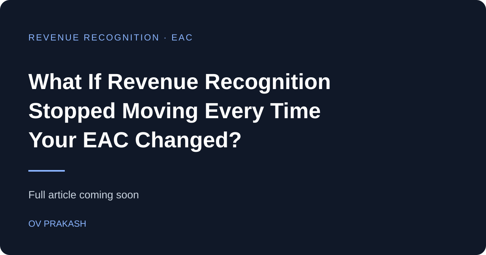

In project-based businesses, one number can create a surprising amount of volatility:
Estimate at Completion — EAC
As actual costs change, forecasts are revised.
As forecasts are revised, EAC changes.
And when revenue recognition depends on that changing EAC, reported revenue can also move from period to period.
Microsoft is introducing an important option in Dynamics 365 Project Operations:
Use the project cost estimate or budget for percentage-of-completion revenue recognition instead of the changing EAC. Microsoft Learn
Why does this matter?
Because it creates a more stable recognition baseline.
Instead of:
the process can use:
That can make revenue recognition more predictable, easier to explain, and easier to audit. Microsoft specifically highlights steadier revenue, reduced month-end surprises, clearer traceability, and improved audit readiness as business benefits. Microsoft Learn
A simple example
Assume a fixed-price project has an original estimated cost of:
₹10,00,000
Actual cost to date:
₹4,00,000
Using the original cost estimate:
Percentage complete = 40%
Now imagine the EAC later increases to:
₹12,00,000
Under an EAC-driven model, the percentage complete can shift because the denominator changed.
But with the new option, the original forecast or project budget remains the recognition baseline.
That is a very different financial story.
Why I think this matters for implementation teams
This is not just a Finance configuration change.
It affects:
- Project forecasting
- Month-end close
- Revenue consistency
- Cost-overrun visibility
- Audit traceability
- Project profitability reporting
And there is an important management implication:
If actual cost exceeds the forecast baseline, the system does not simply use that overrun to accelerate revenue recognition. Microsoft’s documentation describes the overrun as something that should be visible as a loss rather than becoming a revenue trigger. Microsoft Learn
That is a valuable distinction.
Because a project becoming more expensive does not mean the business earned more revenue.
Implementation takeaway
Before enabling this feature, teams should test more than the calculation itself.
Validate:
- Which cost estimate becomes the baseline?
- How frequently are project budgets/forecasts controlled?
- What happens when the project overruns?
- How does this affect month-end recognition?
- Will Finance, PMO and leadership interpret the margin the same way?
Revenue recognition is not just an accounting calculation.
It is the financial translation of project progress.
And the quality of that translation depends heavily on the baseline you choose.
#Dynamics365 #ProjectOperations #ProjectAccounting #RevenueRecognition #D365Finance #ERP #ProjectManagement #FinanceTransformation #MicrosoftDynamics365
Microsoft currently documents this capability for fixed-price projects or fixed-price contract lines and says the supported completion methods are based on Cost amount and Quantity. Microsoft Learn
Microsoft — Revenue recognition using cost estimate instead of EAC